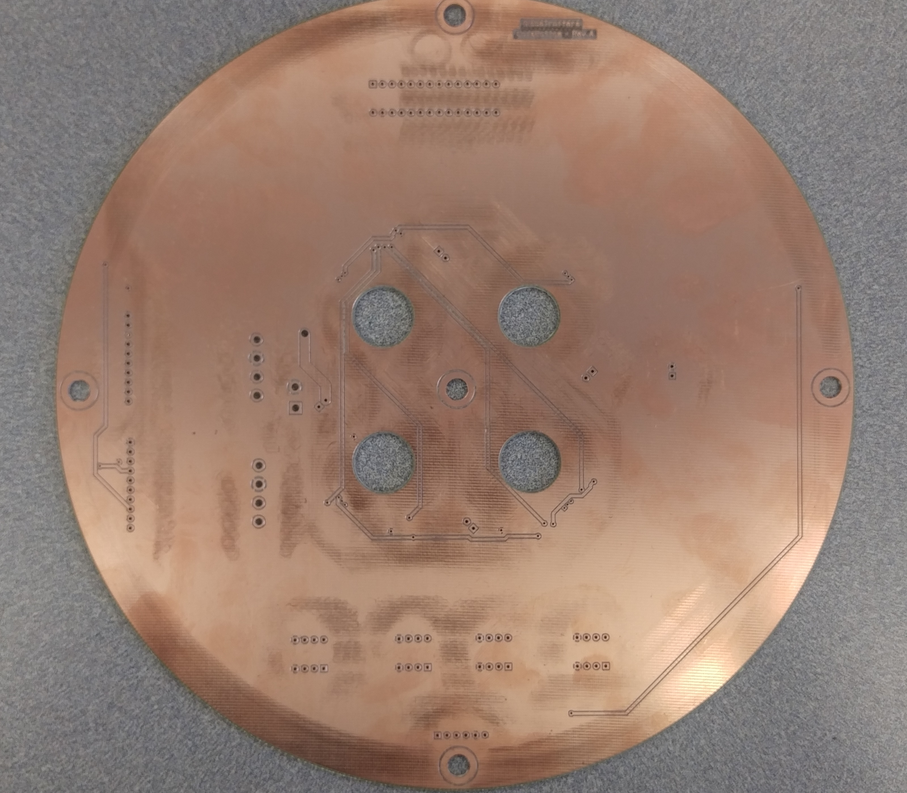
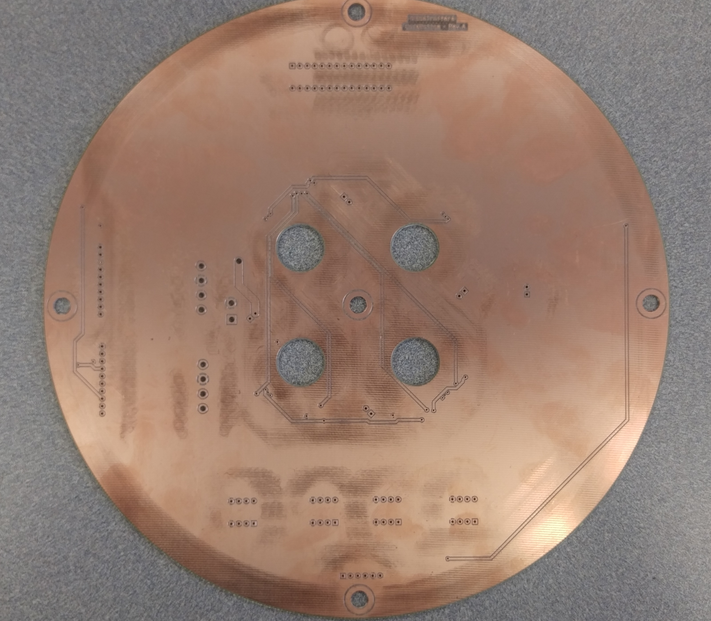
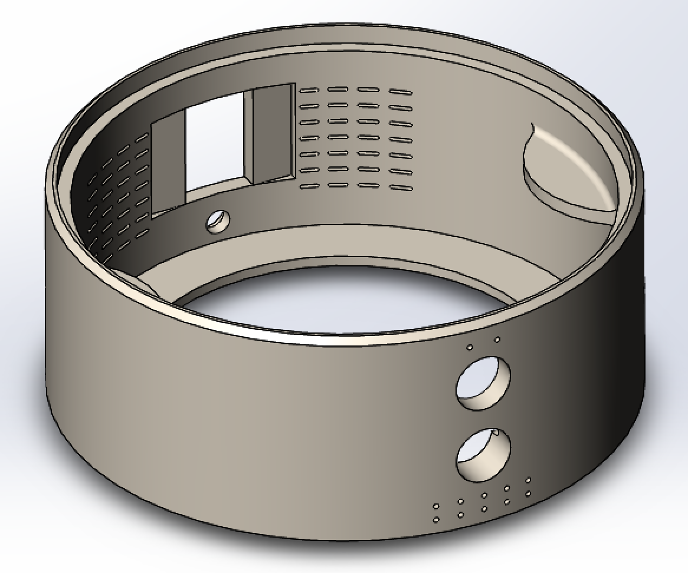
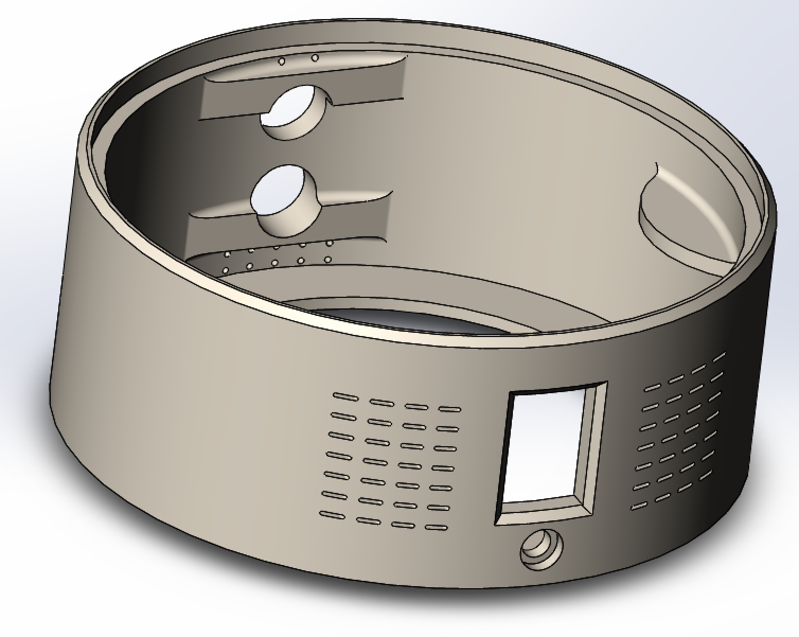
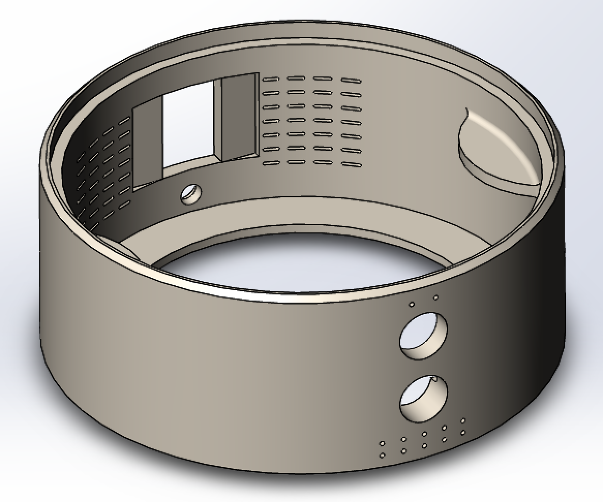
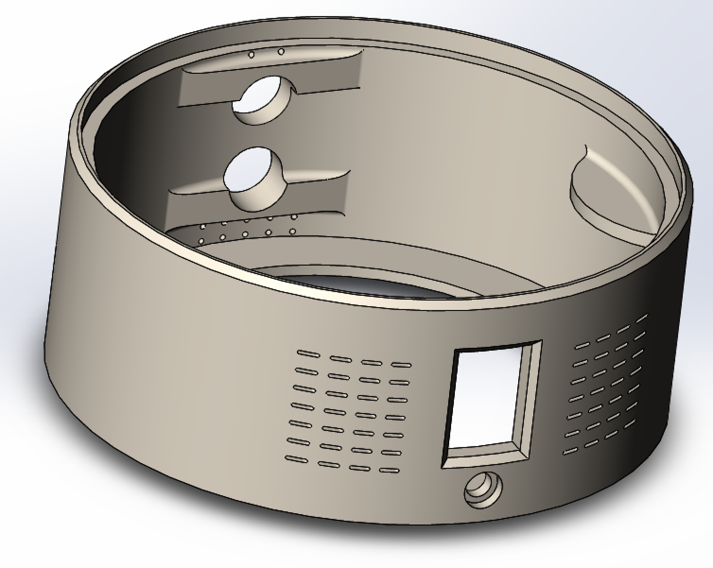
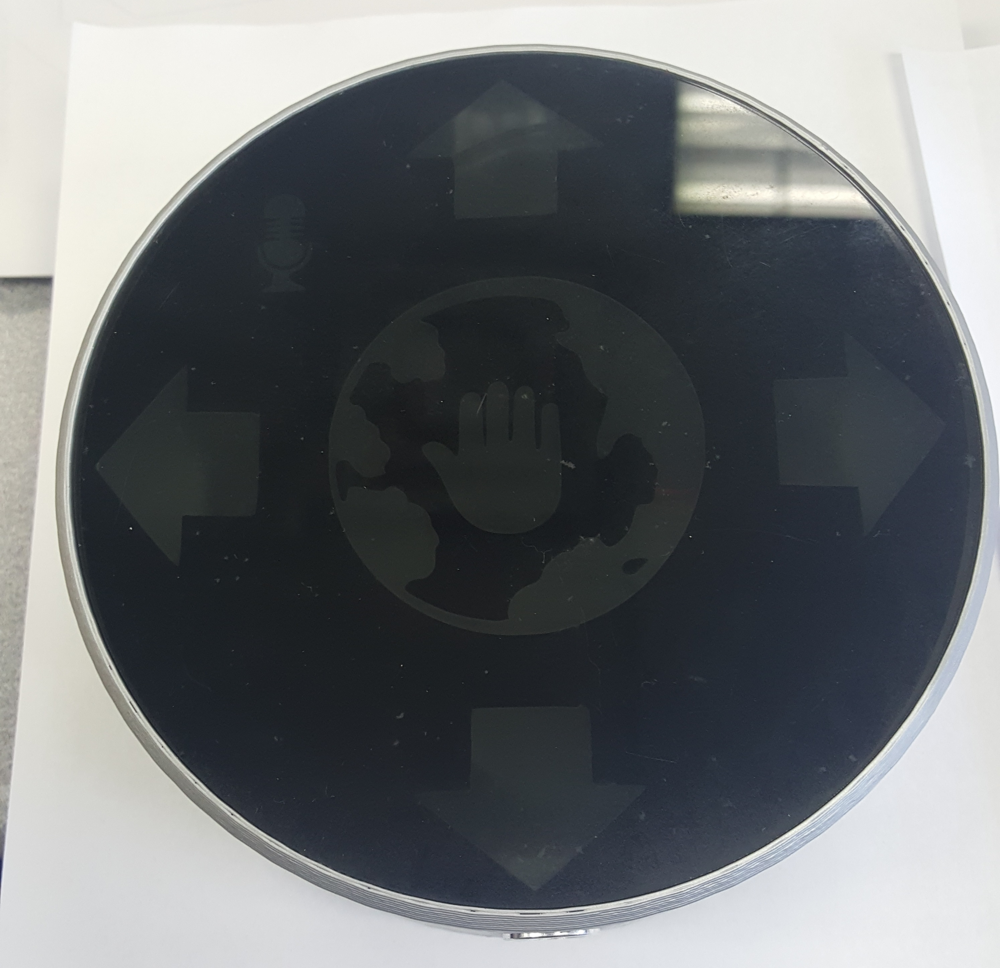
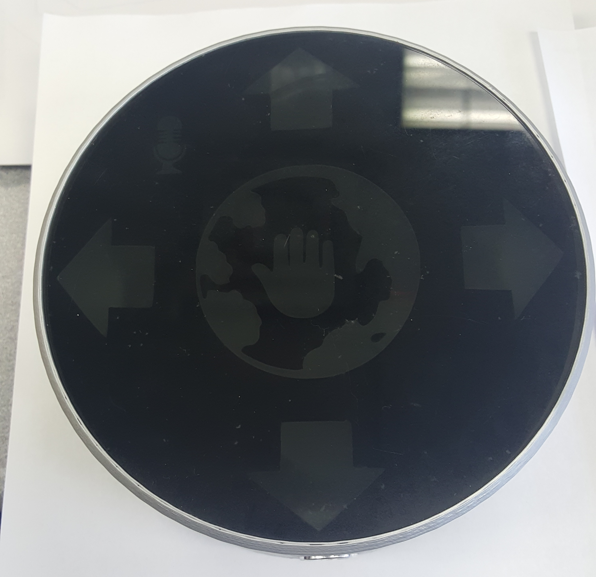

Hardware
Magnetic levitation, feedback control systems, and user interaction
The main role of the hardware is to provide magnetic levitation to our globe and also gather user input in order to be processed by our software. Below is a high level diagram of how these hardware components interact in order to achieve magnetic levitation.
Magnetic Levitation Flow Diagram
Hardware Components
- Raspberry Pi 3
- 2x H-Bridges - VNH5019
- Permanent base ring magnet and disk magnet
- 4x Hall effect sensors - SS49E
- PIC24EP64GP202
- 4x Electromagnetic coils
- 7 Inch display
- 24V Power supply
- 12 Inch globe and acrylic sphere
- Echo Dot
- Gesture Sensor - APDS-9960
- Ultrasonic sensor - HC-SR04
- Custom PCBs
- 3D printed models to house hardware components
- Pico Projector
- 180 degree fisheye lens
- 1000:1 Micro Metal Gearmotor LP 6V
Levitation

The list of components above are mainly used to provide magnetic levitation for our system and support user interaction with Trotter. The permanent base ring magnet is used to provide a static magnetic field to lift the permanent disk magnet. However, this does not provide stable magnetic levitation under Earnshaw's Theorem. So, the H-Bridges, Hall Effect sensors, PIC microcontroller, and electromagnetic coils make up the feedback control system that varies the magnetic field and attempts to keep the magnet in the correct position. These components are responsible for correcting the movement of the floating disk magnet and insuring that the overall system is stable. All of these systems are being powered using a 24V power supply.
High-level Feedback Flow Diagram
The above diagram is a high-level representation of the feedback circuit to stabilize magnetic levitation. The hall effect sensors will continuously record the strength of the magnetic field produced by the floating disk magnet. When the magnet moves in a certain direction, the hall effect sensor voltage will change accordingly. These voltage values are then periodically sampled by the microcontroller which then generates a PWM signal to vary the current going through the electromagnet coils. The electromagnetic coils will apply a force on the floating disk magnet that will push it back to a stable position.
User Interface
The other components shown in the list above are used for supporting user interaction via gesture controls and voice commands. The Echo Dot is used with the Alexa Voice Service to provide custom voice commands that allow the user to interact with Trotter. The gesture and ultrasonic sensors are used to support gesture commands and user detection. Some gesture controls consist of swiping left and right or stopping to control the globes rotation. The globe and 7 inch display are both used to provide the user with visual feedback as a result from user commands. The user interface remains the same across both of our solutions, the physical and virtual globe.
Globe Display and System Design
The fisheye lens and pico projector are used to wrap an image of a globe into the acrylic sphere by shooting the image through the lens and into the bottom of the sphere. This method is used to display the globe to the user for our virtual globe. Our physical globe however uses the classic 12 Inch globe that we are all familiar with. Additionally, we made custom PCBs to secure the various hardware components and also improve testing of the system. Models designed to house the system were 3D printed and contain all the hardware components, which are seprated into components used to provide user interaction and components used to levitate the system. Below is the CAD designs of the levitating base and gesture control base, the PCB setup, and the projected globe.
PCB Design and Setup
 



CAD Models

 




 

Projected Globe

Rotation
For the physical globe model we will be using a 1000:1 low-power DC brushed motor that is attached to the permanent magnet within the globe in order to rotate it. This approach differs from the virtual globe because other hardware components are being used that will physically rotate the globe. Below are images of the proposed setup in order to provide rotation to the globe.